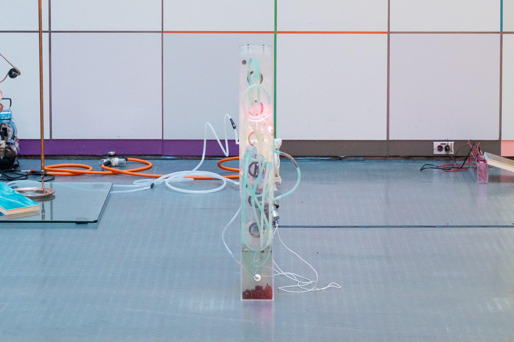
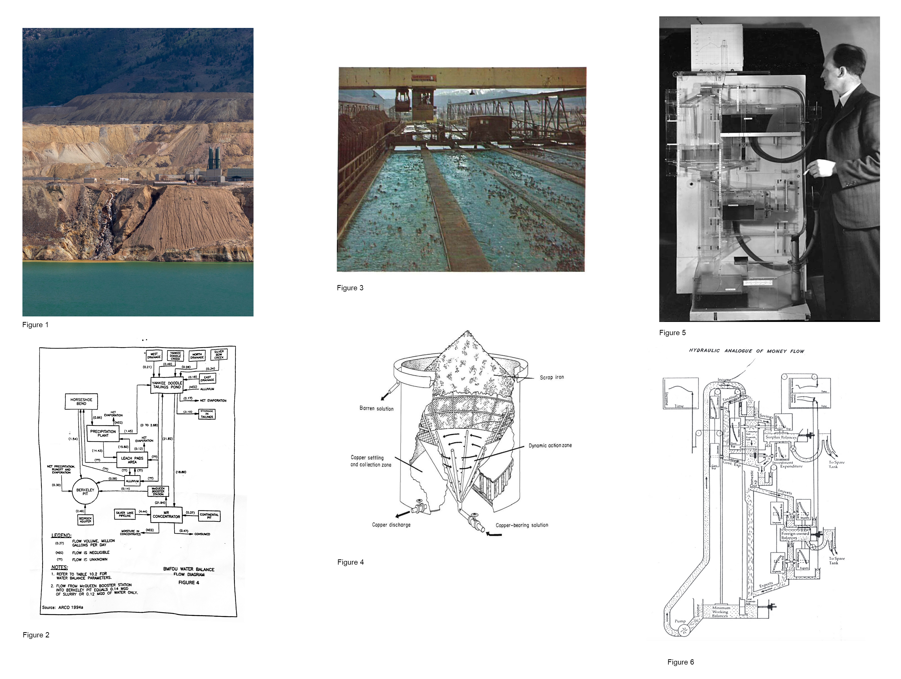
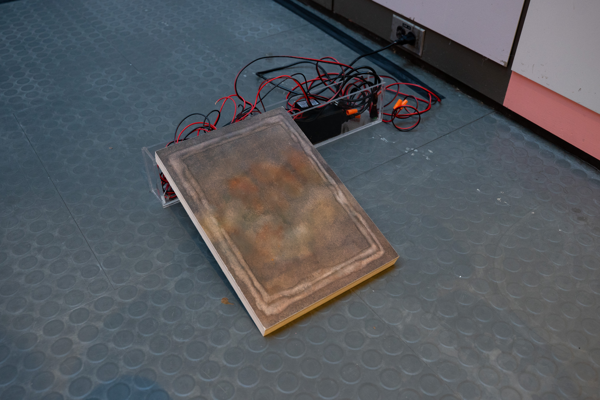
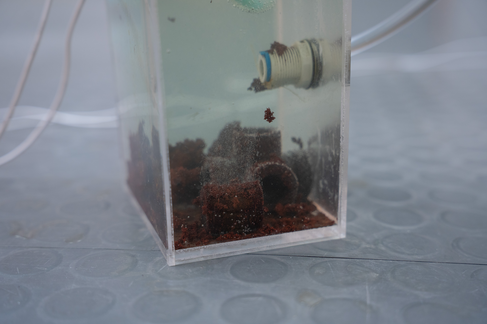
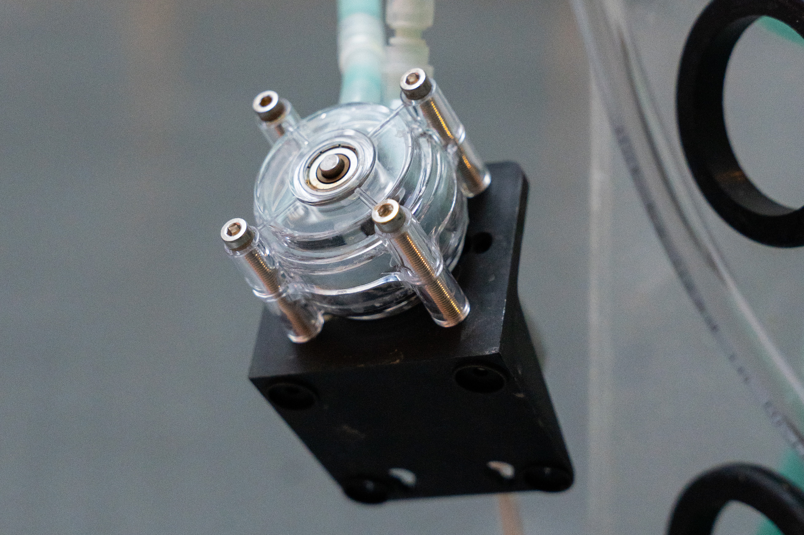
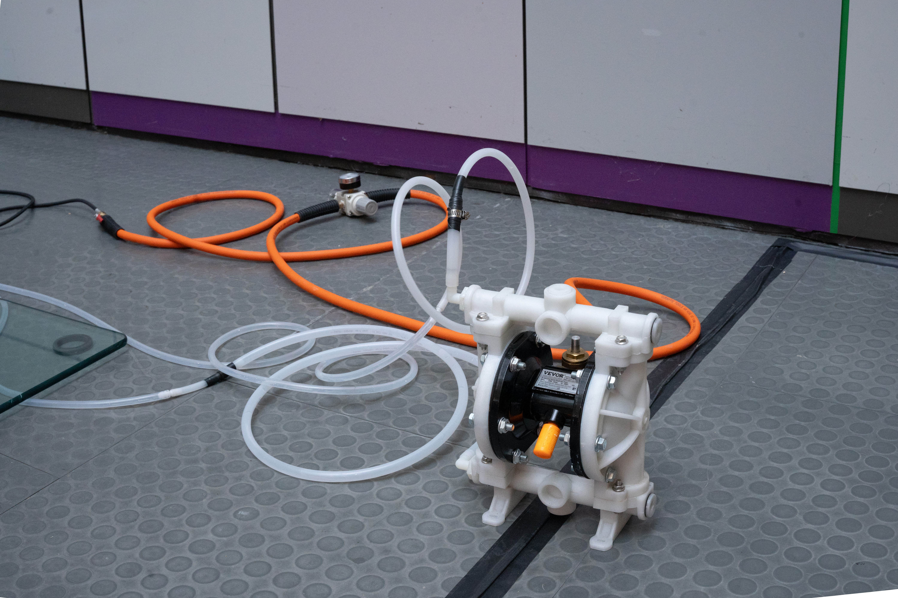
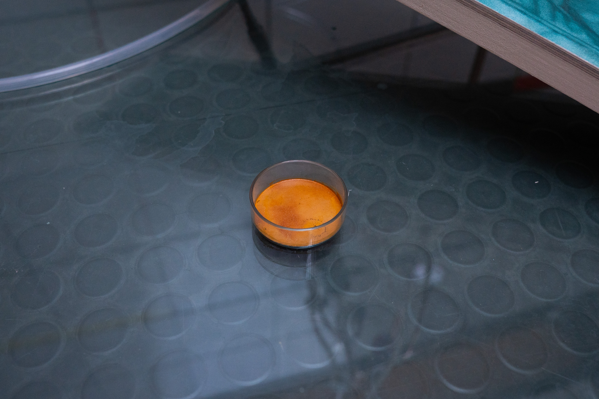
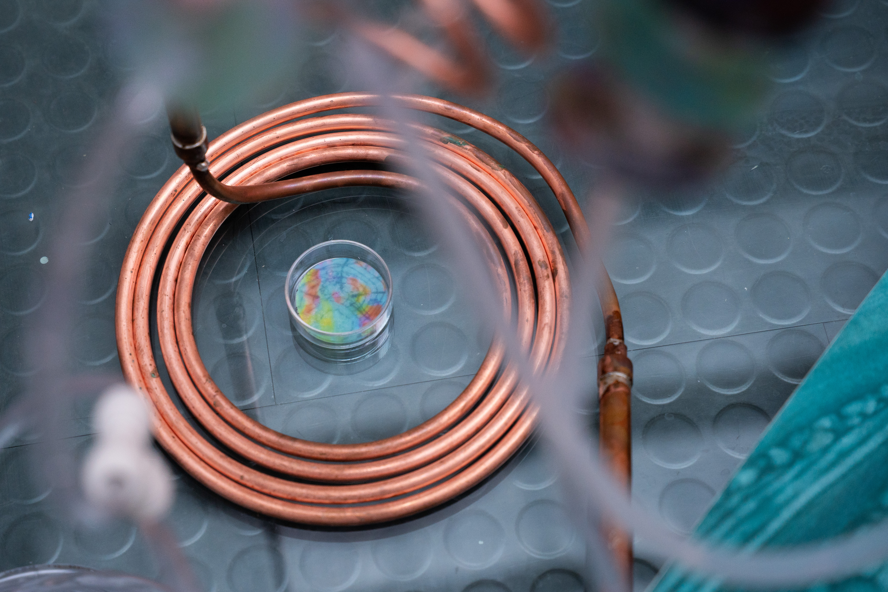
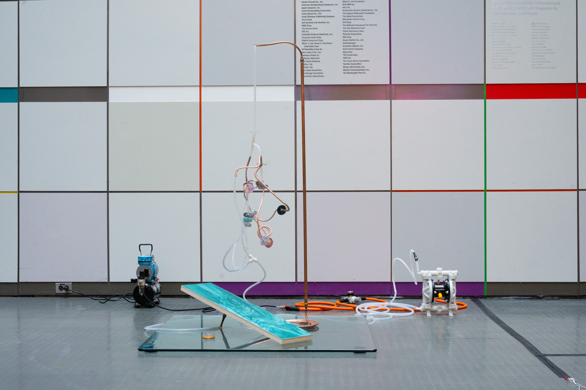

Accumulator 01 2025 copper joints, electrolyte, iron, peristaltic pump, acrylic, silicone, precipitated copper 40 × 6 × 4 inches

Figure 1. Berkeley Pit in Butte, Montana with discharge from the precipitation plant.
Figure 2. Environmental Protection Agency BMFOU Water Balance Flow Diagram.
Figure 3. Copper precipitation plant in Butte Montana and example of a historic Precipitator Cone used for the same process in early 20th Century mining operations.
Figure 4. Cutaway Diagram of Cone Precipitator Designed by Kennecott Copper Corp. (Neal Bishop, Kennecott Research Center.)
Figure 5. The MONIAC, also known as the Phillips Machine was a device used to model the flow of capital in the economy. It presents a dual image of modernity’s desire to govern the economy as environmental media, and environmental media like the economy.
Figure 6. Mechanical diagram of the Phillips Machine.

Accumulator 01 2025 copper joints, electrolyte, iron, peristaltic pump, acrylic, silicone, precipitated copper 40 × 6 × 4 inches

Live embedding representations of an autoencoder machine learning model training on archival image dataset of Butte, Montana.


Untitled
11 x 17 inches
watercolor on paper, mounted on wood panel
2025

Tailings (MIT List Center installation view), 2025

Accumulator Tank 01 (Detail)
Copper cementing on iron couplings.

Accumulator Tank 01 (Detail)
Peristaltic Pump.


Cemented copper from Accumulator Tank 01

Composite image of chemical composition of industrial waste. Captured by confocal Raman imaging system alpha300 from Witec.

